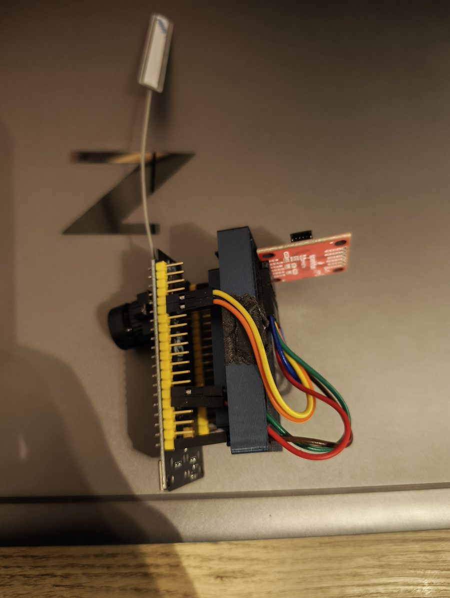
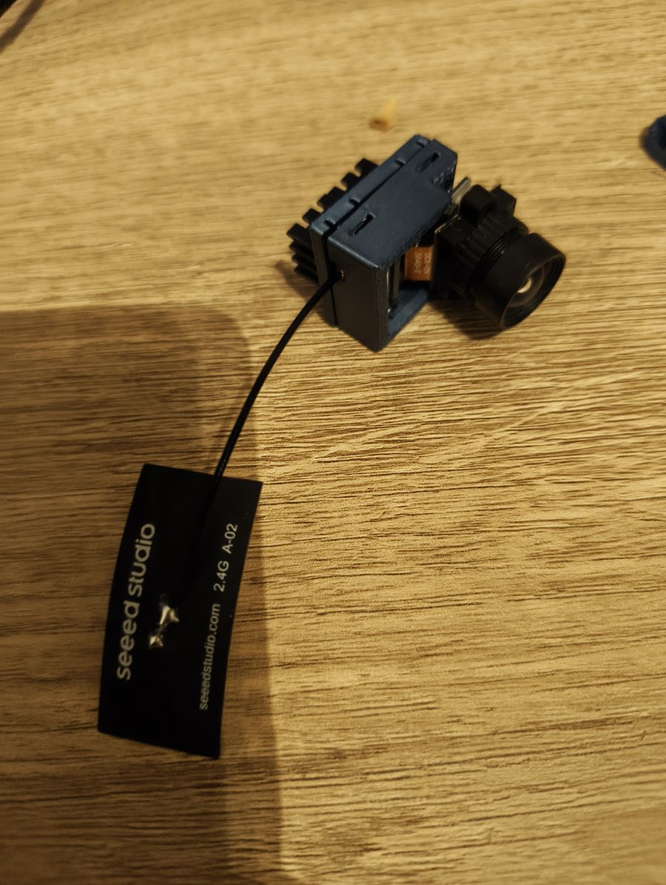

Edge deployment
Quantization, pruning and knowledge distillation to fit models onto constrained compute, then TensorRT/ONNX for deployment. I profile the whole pipeline (capture → preprocess → inference → actuation), not just the forward pass.
Robotics · Edge AI · Embedded
I'm Niranjan, an embedded and edge-AI engineer based in Belgium. I spent five years at CNH Industrial putting camera-based perception onto combine harvesters, and I hold an MSc in AI from KU Leuven. My work sits between the model and the metal: profiling, compressing and re-architecting models until they hit their latency budget on the compute the robot actually has.
01 / Why I'm a fit for the robotics track
At most robotics hackathons, the bottleneck isn't the idea. It's the moment a model that ran fine on a cloud GPU meets an onboard computer, a wobbly USB camera and a control loop that needs answers in milliseconds. That gap is where I've spent my career.
Quantization, pruning and knowledge distillation to fit models onto constrained compute, then TensorRT/ONNX for deployment. I profile the whole pipeline (capture → preprocess → inference → actuation), not just the forward pass.
I instrument end-to-end timing, find where the milliseconds actually go (often I/O and memory copies, not the network) and fix that.
Firmware, sensor drivers, CAN, camera and IMU integration, ROS 2. I'm comfortable reading a datasheet when an unfamiliar board won't cooperate.
SO-101 pipelines for teleoperated data collection, LeRobot datasets, and policy rollout.
02 / Selected work
At the ERH hackathon, our team built an SO-101 arm that moves pieces on a physical chess board. The robot-side pipeline covered scripted teleoperated data collection into LeRobotDataset v3.0, and a rollout tool that runs a pretrained FLUX 3 Action policy on the arm with the model either local or on a remote GPU, behind one command. While fine-tuning, we found a normalization issue in the open-source model and corrected it with our own normalization. The arm then moved pieces with the fine-tuned policy.
What I learned Simulation is super important for getting data in time-constrained environments like a hackathon.
GitHub ↗

A microcontroller that costs a few euros isn't supposed to do SLAM, so I'm trying to make it. I built dual-core FreeRTOS firmware with camera capture and network tasks pinned to separate cores, a ring buffer that keeps a gap-free 1 kHz IMU stream, and camera and IMU samples timestamped on a shared clock. I traced streaming stalls to TCP retransmission timeouts in Wireshark and tuned the LwIP and Wi-Fi buffers until the board streamed camera frames at 25 fps alongside the IMU. A host server records everything to ROS 2 bags, and a replay pipeline runs monocular visual odometry. I'm now building the SLAM part directly on the compute that's left over on the ESP32-S3. Memory management is the main problem, so the work is fitting a sparse visual-inertial pipeline into that memory budget and optimizing it for this hardware. The capture module is designed to drop onto other robots as a cheap, synchronized sensor head.
What I learned A config API returning ESP_OK doesn't mean the hardware did it, so you verify at the PHY layer. Separately, camera–IMU time offset hides inside gyro bias unless you calibrate the two jointly.
For five years I built camera-based perception that runs on the machine itself: real-time vision on embedded compute inside a combine harvester, surviving dust, vibration and changing light while talking to the rest of the machine over CAN. I took models from training through compression and distillation to on-machine deployment, and supervised thesis students on knowledge distillation for edge models.
What I learned In the field, robustness and determinism beat benchmark accuracy every time.
A Python library that connects the MPU9250 IMU to a Raspberry Pi over I2C. It includes gyro, accelerometer and magnetometer calibration (including ellipsoid fitting for the magnetometer) and Kalman and Madgwick sensor fusion for orientation. I also wrote companion articles on Medium explaining the math behind it. It's used by people building their own robots.
03 / Patents
A camera behind a transparent panel measures corn ear width in real time.
Camera images of chopped straw estimate chopping quality during operation and knife wear when idle.
Vision measures crop geometry in the feederhouse and automatically adjusts header deck plates.
04 / Experience
Sep 2022 – Present
Embedded perception and edge deployment for combine harvesters.
Aug 2021 – Sep 2022
Segmentation models and edge deployment, working as a consultant to CNH before joining directly.
Sep 2020 – Jun 2021
Cum laude.
Aug 2018 – Apr 2020
05 / Toolkit